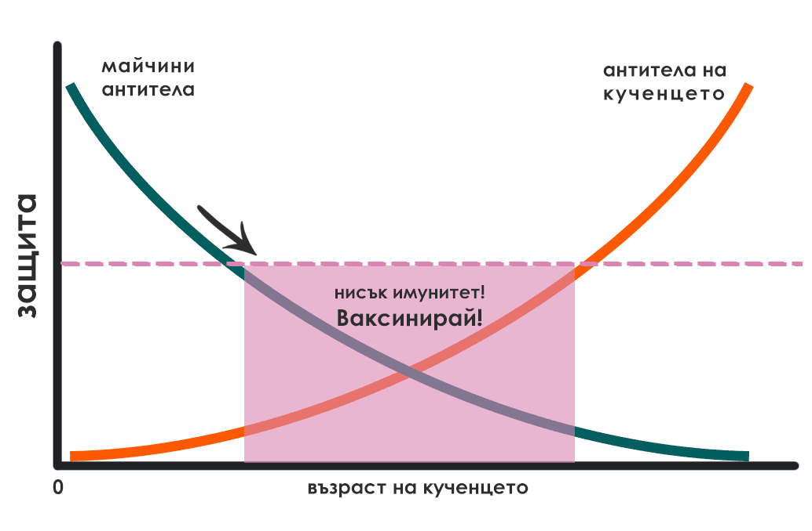
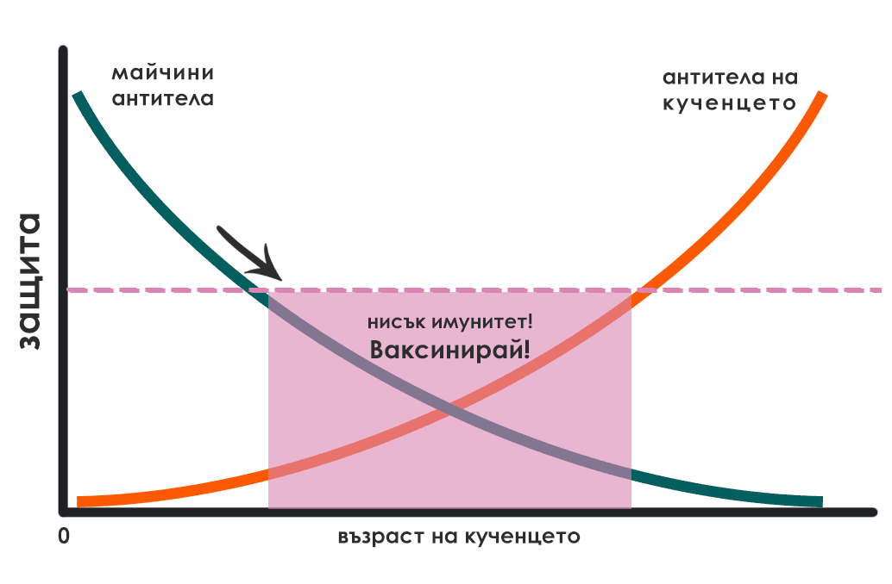

Ваксинация
Какво представлява ваксината? Отговорът на този въпрос се крие в същността на имунната система.
Какво е имунна система? За да не остане и капка неяснота, си
представете държава с многобройна и силна армия, която да я защитава. Ако друга държава реши да
я нападне, то тя ще бъде разгромена. В този пример нашето тяло представлява тази силна държава,
а войниците – това са имунната система.
Но за да бъде една армия достатъчно силна, то тя трябва не само да има многобройни войници, но и
тези същите да са обучени как да се бият срещу различните врагове – с различни техники и оръжия.
Както една армия трябва да се обучи, така и нашата имунна система – също.
Но как се „обучава“ една имунна система? Както и една армия – чрез тренировки и истински битки. Невинаги имунната система има нужда да „ходи на бойното поле“, за да „тренира“. В 21. век са създадени т. нар. ваксини, които тренират или подпомагат имунната система. Как го правят?
- Ваксините може грубо да се разделят на две категории:
- „живи“
- „убити“
Живите ваксини представляват вируси, които са толкова отслабени, че не могат да причинят заболяване. Картинката става по-ясна, когато си представите немощен 92-годишен дядо, изпратен на бойното поле – невиждащ и нечуващ. Тези ваксини съдържат вирус или част от вирус, който бива регистриран от имунната система, която впоследствие произвежда антитела (частици, които се борят срещу вируси и бактерии) и така имунната система става по-силна, защото при следващ контакт на имунната система с този вирус, тя вече е изградила антитела и го унищожава.
Убитите ваксини съдържат „убит“ вирус, който при контакт с имунната система я кара да произвежда антитела и съответно така да изгради имунитет. Живите ваксини можем да ги наречем „инфекциозни“, защото макар и много рядко, този 92-годишен дядо може да прогледне и да извади отнякъде къртечницата, т. е. уж отслабения вирус да възвърне силите си и да причини заболяване.
През първите седмици от живота си повечето кученца са защите от майчините антитела, които са
приели чрез майчиното мляко. Тези антитела намаляват, като изчезват до 8-12-седмична възраст.
След като майчините антитела намалеят, тъй като кученцата стават уязвими, трябва да започне тяхната ваксинация, за да изградят достатъчно силна имунна система.
 

Ваксините биват задължителни и незадължителни – първата група се поставя на всички кучета и кученца, докато незадължителните – само при риск от излагане на определено заболяване.
- Вирусите, срещу които задължително трябва да се ваксинират
кученцата, са:
- вирус на гана (съкратено, CDV) – причинява гана
- кучешки парвовирус (съкратено, CPV) – причинява парвовироза
- кучешки аденовирус (съкратено, CAV-2) – предпазва от инфекциозен хепатит (CAV-1) и кучешка кашлица (CAV-2)
- вирус на беса (на англ. Rabies) – причинява бяс
-
Има и незадължителни ваксини, които се правят по желание на
собственика и по преценка на ветеринарния лекар:
- бордетела (Bordetella bronchiseptica) – причинява кучешка кашлица
- вирус на кучешка параинфлуенца (CpiV) – причинява кучешка кашлица
- Лептоспира (Lepto) – причинява лептоспироза
- Кучешки херпесвирус – причинява херпесвирусна инфекция
- Гъбички (Microsporum canis) – причинява дерматомикоза
По най-разпространената ваксинационна схема у нас имунизацията на
кученцата започва на 6-седмична възраст, както следва:
Първа ваксина (45-и ден, т. е. 6-седмична възраст) - тя е
срещу парвовироза или срещу парвовироза и гана.
Втора ваксина (8-9 седмична възраст) – срещу парвовироза,
гана, инфекциозен хепатит, кучешка кашлица.
Трета ваксина (12-седмична възраст) – срещу същите
заболявания, както втората ваксина, но тя е и срещу беса.
Годишна ваксина (т. нар. реваксинация) – тя се прави всяка
година.
Макар и рядко, не при всички кученца се развива силна имунна система.
Според Ръководството
за ваксиниране на кучета и котки на Световната асоциация на ветеринарните лекари за
дребни животни (WSAVA), издадено през 2016 год., ваксините може да се
провалят да индуцират имунитет поради три причини:
1 – Майчините антитела неутрализират ваксината. Независимо от
това, след последното поставяне на ваксина кученцето вече трябва да е изградило имунитет.
2 – Ваксината не е достатъчно силна заради: грешки при
производството, съхранението, транспорта или инжектирането.
3 – Животното не е отговорило адекватно на ваксината. То не е
изградило антитела и следователно няма имунитет срещу съответните заболявания. Такива животни се
срещат с честота едно на няколко хиляди.
За да не могат майчините антитела да неутрализират ваксината, същото това ръководство предлага нова ваксинационна схема, която започва между 6-а и 9-а седмици според това дали майката на кученцата е била ваксинирана (т. е. дали тя има майчини антитела, които да предаде на кученцата си) – ако тя не е била ваксинирана, то те се ваксинират по-рано, а ако е била – по-късно. След първоначалната ваксинация следващите ваксини се поставят през интервал от 3-4 седмици до навършване на 16-седмична възраст. След което следва реваксинация на 26-а или 52-а седмица.
Каква е разликата? Ако предприемете ваксиниране по втората ваксинационна схема, то вместо три ваксини, на кученцето Ви ще се поставят четири, като началото на поставянето им ще е съобразено с високата концентрация на майчините антитела.
В зависимост от индивидуалните характеристики и здравословното състояние на Вашия любимец Вашият ветеринарен лекар ще прецени каква ще бъде неговата ваксинационна схема. Ако вече знаете Вашата ваксинационна схема, можете да използвате по-долния калкулатор, за да видите на кои дати трябва да посетите ветеринаря, за да ваксинира кученцето Ви. Не забравяйте, че трябва да обезпаразитите любимецът си преди да бъде ваксиниран. (виж: Обезпаразитяване)
Стара ваксинационна схема
| Първа ваксина: | 6-а седмица | |
| Втора ваксина: | 8-а седмица | |
| или | ||
| 9-а седмица | ||
| Трета ваксина: | 12-а седмица | |
| Реваксинация: | 52-а седмица | |